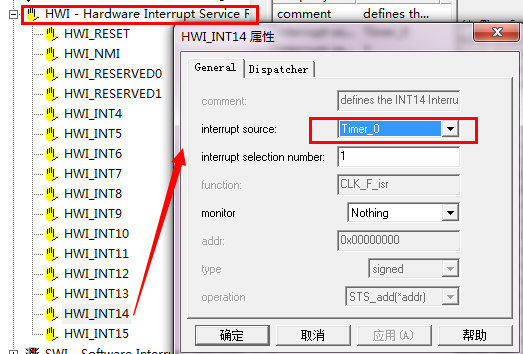
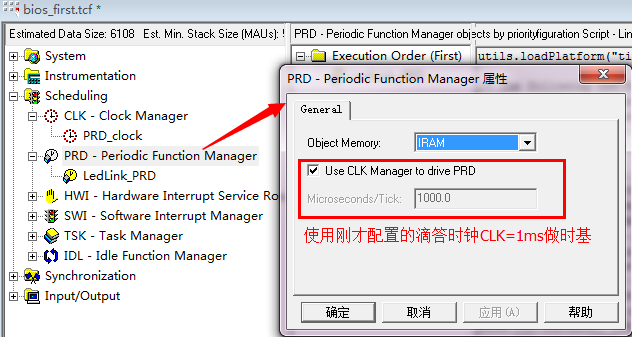
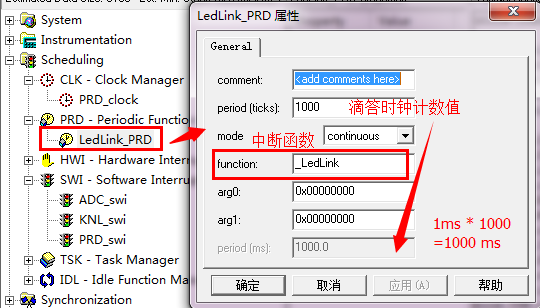
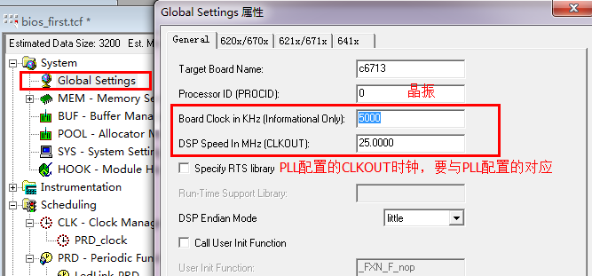
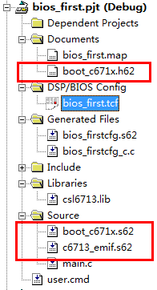
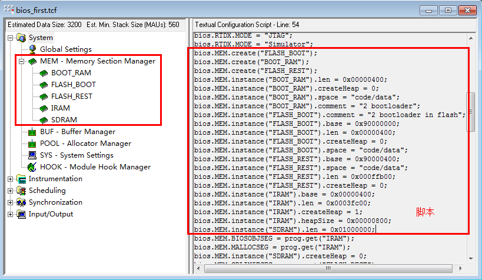
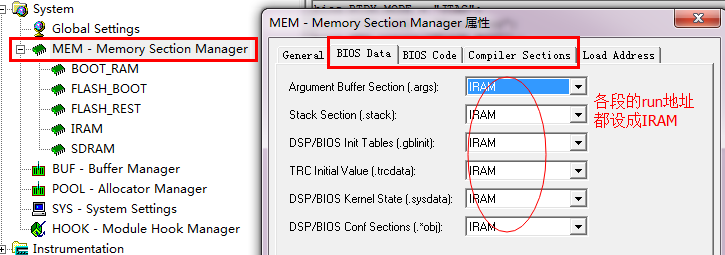
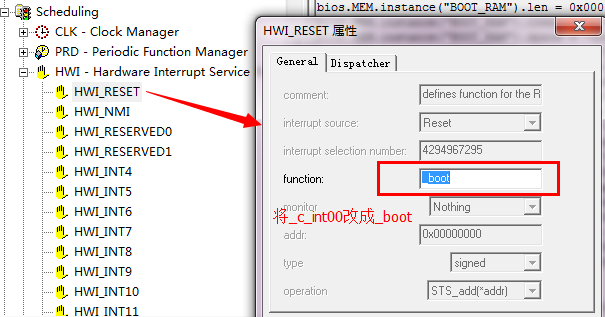

在上篇文章DSP-BIOS使用入门的基础上，这里用用DSP/BIOS操作系统的CLK和PRD模块，这两个模块涉及到硬件定时器，我们使用仿真器先在RAM上将LED闪烁灯的程序调通。
CLK作用：片上定时器管理，学过ARM的都知道滴答时钟，CLK就是DSP操作系统的滴答时钟！
学过操作系统的也都知道（当然，像在现在的学校，学过操作系统都不知道的不在少数）：操作系统必须要提供时基，才能实现调度！这个时基就是滴答时钟提供的（PC也不例外，也有时基）。
但C6713上没有专门的滴答时钟模块，因此是通过DSP上的通用定时器触发，其中断函数也就是Timer的中断函数，比如要设置滴答时钟为1ms，则其属性可以设置如下：
上面配置Timer0滴答时钟，注意哦，Microseconds表示us，Millisecond才表示ms！
从上面配置也可以看到，Timer0的CPU中断号（CPU Interrupt）是HWI_INT14，我们到HWI（硬件中断模块）下看看是不是，

在CLK中配置为滴答时钟的Timer，滴答中断函数（也是Timer0中断函数）也固定了，这里是CLK_F_isr，不可修改！
练习：试试在CLK中配置其它的Timer，再看看HWI中对应的硬件中断的变化？
答案：CLK中配置的Timer与HWI中对应的Timer中断是关联的。好了，我们说回写LED程序，就写一个最简单的吧——让一个LED灯闪烁，使用滴答时钟定时，时间间隔为1s。
滴答时钟不是1ms吗？怎么实现1s的定时呢？这就还得了解一个模块——周期函数PDR。PDR的触发是基于滴答时钟周期的倍数，PRD是一种特殊的软件中断（可以查看SWI模块下，有一个PDR_swi的软中断），这点与CLK不同，CLK是硬件Timer中断实现的。

如上图所示，勾选上Use CLK Manager to drive PDR后，就是用CLK周期计数来触发PDR。我们插入一个PDR对象LedLink_PDR，配置属性如下，

滴答时钟CLK既然是1ms，Period表示经过的滴答时钟次数（ticks），因此LedLink_PDR的周期为1ms*1000 = 1000ms = 1s，这就达到了定时1s的目的。我们接着在.c文件中实现上面的（软）中断函数LedLink，
#include "bios_firstcfg.h"
#include <csl.h> // CSL 库头文件
#include <csl_gpio.h> // CSL 库的GPIO头文件
static GPIO_Handle hGpio;
int main(void)
{
CSL_init();
hGpio = GPIO_open(GPIO_DEV0,GPIO_OPEN_RESET);
GPIO_reset(hGpio);
GPIO_pinEnable(hGpio,GPIO_PIN3);
GPIO_pinDirection(hGpio,GPIO_PIN3,GPIO_OUTPUT);
GPIO_pinWrite(hGpio,GPIO_PIN3,0);
LOG_enable(&trace);
LOG_printf(&trace, "Hello DSP/BIOS %d.", 0);
return 0;
}
void LedLink(void)
{
static Uint16 i =0;
i = (i + 1) & 0x01;
GPIO_pinWrite(hGpio,GPIO_PIN3, i);
}搭建基本的BIOS工程基于上篇文章DSP-BIOS使用入门，func_task0、func_task1和swi_adc都是上篇文章中的在DSP/BIOS中使用任务和软中断的例程，这里其实没什么用，暂且不管。
要在硬件上跑，一定要在Global Setting中设置好,

另外硬件上——我的板子上GPIO_PIN3连接着LED，低电平点亮！cmd文件都是DSP/BIOS配置文件自动配置好了，不用管了暂时。挂上仿真器，下载到板子的RAM上运行！OK，成功！
其实在上一篇中已经讲过DSP/BIOS的启动过程，这里不妨再唠叨一下：
其实除了其中第1步对我们烧写Flash有指导意义外，其它各步骤都是无关紧要的（当然，仅就这里讨论的问题而言）。基于此，这里烧写Flash的思路就是：在系统复位后，程序跳转到_c_init00之前，写一段从Flash拷贝应用程序到内存的代码就好了！
在之前“TMS320C6713烧写Flash的通用方法”一文中，已经详述了如何烧写裸机的代码，这里只需要对DSP/BIOS工程做很少的改动，就可无缝的将之前的烧写方法用在这里，下面还是按步骤来，主要描述一些不同的地方（这样清晰些）：
添加二级Bootloader用到的文件（3个）到工程中，如下图，

确定下boot_c671x.s62文件中的copy_done函数是这样的：
copy_done:
mvkl .S2 _c_int00,b0
mvkh .S2 _c_int00,b0
b .S2 b0
nop 5而不是这样的：
copy_done:
mvkl .S2 _main,b0
mvkh .S2 _main,b0
b .S2 b0
nop 5因为我们要先执行从Flash拷贝代码到内存，再执行c_int00跳转到main函数。
到这里下载三个bootloader文件！如果您使用的RAM或Flash与我的不同，请修改c6713_emif.s62中关于EMIF接口的寄存器配置！
划分Memory，设置“段”

这就按照“TMS320C6713烧写Flash的通用方法”中裸机划分内存的方法划分，
MEMORY
{
BOOT_RAM : o=00000000h,l=00000400h
IRAM : o=00000400h,l=00040000h
FLASH_BOOT : o=90000000h,l=00000400h
FLASH_REST : o=90000400h,l=000FFB00h
}heap放在了IRAM上。

如上图，也按照“TMS320C6713烧写Flash的通用方法”按中的cmd分配的，大都分配到IRAM中不容易出问题（虽然说多占用一些RAM吧）。
写cmd文件（user.cmd，如上图）
DSP/BIOS已经自动生成了一个CMD文件，最好不要去修改，只需要将DSP/BIOS自动生成的从工程中移除（不是删了，而是Remove），自己新建一个，将DSP/BIOS的包含进来就行了，
-lbios_firstcfg.cmd
-lcsl6713.lib
SECTIONS
{
/* RAM */
.boot_load: {} > BOOT_RAM
/* User defined */
}-lbios_firstcfg.cmd将自动生成的包含进来，关键是增加了.boot_load段，该段专门用于放置二级Bootloader。将user.cmd包含到工程中。
修改DSP/BIOS复位中断
在“TMS320C6713烧写Flash的通用方法”中，曾经修改vecs.s汇编文件，将原来的复位向量
vectors:
vector0: VEC_ENTRY _c_int00 ;RESET
vector1: VEC_ENTRY _vec_dummy ;NMI
vector2: VEC_ENTRY _vec_dummy ;RSVD改成了
vectors:
vector0: VEC_ENTRY _boot ;RESET
vector1: VEC_ENTRY _vec_dummy ;NMI
vector2: VEC_ENTRY _vec_dummy ;RSVD这里也一样，只不过可以通过IDE直接修改，

这里的_boot就是二级Bootloader文件boot_c671x.s62中的boot段。
好了，没什么事了，你可以编译，接着按“TMS320C6713烧写Flash的通用方法”中的方法完成烧写了。
还在1~2个月之前，我还对DSP烧写Flash一无所知，更对DSP/BIOS一无所知，然后，从网络上Download了十来篇论文，然后一篇一篇的看了一遍，虽说不能立刻完全明白，但零星的还是感觉知道了那么一点，然后准备自己动手写，却发现无处着手——那些论文尽是框架大论！完全无法满足初学者的需求。
于是又在网上Google/Baidu浪淘沙一样的想找一些简单的，尤其是给出几乎每步详细步骤的，可惜的是——毫无所获！后来想想，折腾了这么几天，还是不知道从哪入手，不行了，于是去找来了TI的关于二级Bootloader的手册http://www.ti.com.cn/cn/lit/an/spra999a/spra999a.pdf，一页页的看（其实手册很短，也就十几二十页），突然发现慢慢有了些眉目。TI的手册上给出了二级引导的源码，并描述了那样做的原因和过程，于是根据该手册提供的相关资料一点点将Bootloader的过程拼凑了起来！关键是在_c_int00和main函数之间下功夫。
后来就参考TI的文档开始写了，但启动文件是写好了，但怎么烧写到Flash中一直困扰着我，如果烧写和应用程序在同一个程序中，那不是就成了“鸡生蛋还是蛋生鸡”的问题了吗？（其实这个可以通过硬件上外置一个拨码开关来设置，就可以令程序自烧写）。然而我也没有开关，从一个QQ群里咨询了一位大牛，大牛给了我一份他烧写的方法，顿时豁然开朗，把DSP张载程序后在内存运行的东西先都读出来，在通过另一个工程烧写不就可以了吗？我最后就是这么做的，在这过程中还一直庆幸自己对cmd文件、内存等还算了解，甚至在将从内存中导出的东西修改成头文件还用到了VIM（神一样的编辑器）。学习DSP/BIOS，我庆幸之前已经用过了uCOS ii，很快就入门了，所谓“书到用时方恨少”，当然自知其中韵味了。
有些网友看过我的“TMS320C6713烧写Flash的通用方法”一文，于是来问我：
“怎么我直接拷贝哪些汇编过去不行呢？”然后，我回答：
“您能回去看看那汇编是干什么的吗？”回答说：
“汇编太复杂了，您就说下为什么吧。”好吧，我实在不知怎么去劝导他，只有深刻体会这些汇编实现的功能及整个启动的流程（代码执行/跳转的过程），才能保证不管硬件怎么变、环境怎么变，都能正确的成功的烧写！
IT界一直存在着这么一种观点：
“这代码什么的都有了，会用就行了，不用重复造轮子！”这话没错，可惜用错了地方，我只能说：
“轮子是有了，可这轮子好使吗？敢保证跑它十天八天不会挂吗？”一旦成了标准，你可以不用重复造轮子了，否则，“不断的改进”才是创造的源泉！